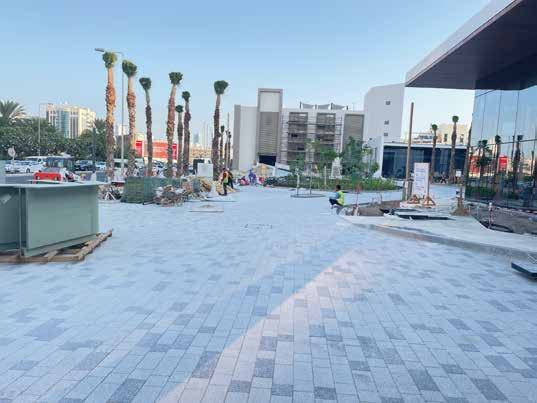
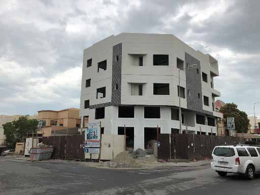
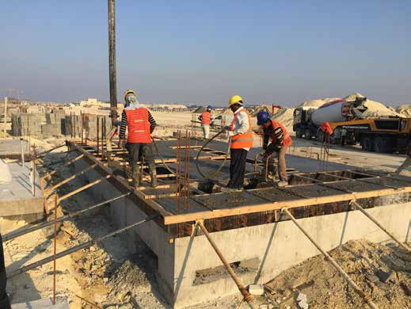
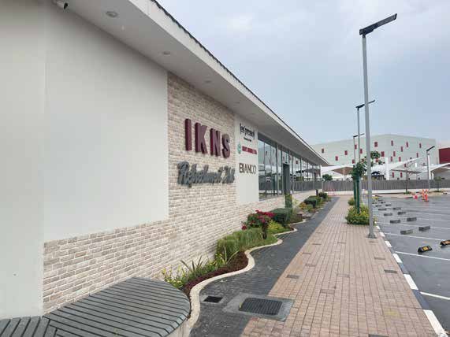

Building Construction
Building works across villas, multi-storey buildings, facilities and other structures.
Explore →BUILDING TODAY, SHAPING TOMORROW
Bawadir Construction W.L.L. delivers high-quality building and infrastructure solutions with integrity, safety and commitment to excellence.
WHO WE ARE
Bawadir Construction W.L.L. is the current identity of a Bahrain construction business formerly operating as Al Kram Construction W.L.L. The company profile records operations in Bahrain since 2009, with a focus on building and infrastructure works.
Our portfolio covers a broad range of construction, civil, paving, maintenance, renovation and infrastructure activities across Bahrain.
Discover Bawadir →OUR CAPABILITIES
Building works across villas, multi-storey buildings, facilities and other structures.
Explore →Roads, drainage, sewerage, paving, access and associated civil infrastructure.
Explore →Maintenance, refurbishment and renovation work across a range of facilities.
Explore →Waterproofing work listed as part of the company's established service offering.
Explore →Water tank construction supported by related tank foundation and irrigation works in the project history.
Explore →SELECTED WORK




WHY BAWADIR
The previous company profile describes a client base spanning government entities, private organisations and commercial clients, with an emphasis on client satisfaction, timelines, budgets, quality, safety and sustainability.
START A CONVERSATION
Get in touch with the Bawadir Construction team.